第40天：运行时库
第40天：运行时库
链接器写完了，但是有一个问题。
虽然我们生成了可执行文件 b.out，但它如此沉默，跑起来什么效果都没有。就算它的功能是生成 1000 个随机整数然后对它们排序，可是结果呢？
所以，我们要做点什么，让可执行程序和我们交互起来。
前面提到过“CRT”。CRT（C Runtime Library，C 运行时库）是 C 语言程序运行时所依赖的基础库的统称。打个比方，离开了 CRT，C 语言就好比是个没有门窗、不通水电的毛坯房，根本没有办法居住。
有 CRT的 C 语言，相当于毛坯房完成了 “基础装修”：门窗装好了、水电通了、厨卫能用、有基础家具和软装。
那有读者问，这个 CRT 应该谁负责呢？
CRT 的 “归属” 和 “职责” 是编译器主导实现，操作系统提供适配支持。二者分工明确，既不是纯编译器的事，也不是纯操作系统的事，而是 “编译器造轮子，操作系统给跑道” 的关系。
要说谁主要谁次要，那就是 90% 的责任是编译器。继续刚才的比喻，编译器就是装修公司，负责整个装修工作，操作系统是物业公司或者市政公司，提供水电、暖气等底层支撑。
CRT 本质是编译器厂商为自家编译器配套实现的标准库，编译器对 CRT 负核心责任。所有 CRT 的基础功能，都是编译器厂商（如 GCC、Clang、MSVC）编写的。
这套代码至少包括入口函数，及其所依赖的函数构成的函数集合。当然，它还理应包括各种标准库函数的实现。一个 CRT 大概包括如下功能：
- 标准库函数的实现
- 程序启动与退出
- 内存管理
- IO 功能的封装和实现
- 语言特性支撑
- 调试
操作系统不 “实现” CRT，但为 CRT 提供 “底层运行环境”。CRT 的高级功能，最终都会调用操作系统的系统调用。例如
printf→ 调用 Linux 的write系统调用（往 stdout 写数据）malloc→ 调用 Linux 的brk/mmap系统调用（向内核申请内存）exit→ 调用 Linux 的exit_group系统调用（通知内核终止进程）
本文，我们就实现一个迷你 CRT。
我们已经有了一个启动文件—— start.asm
虽然它只有几行代码：
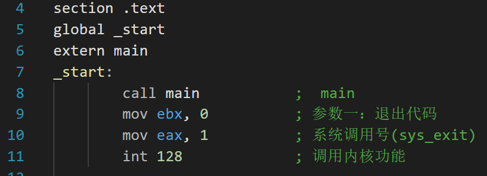
我们要扩充它的代码，增加几个小功能。
1、模仿 printf，实现一个简单的 my_printf，支持 10 进制整数、16 进制整数、字符串的输出，还要支持可变参数
2、提供一个返回 32 位随机整数的函数
3、实现 getchar()，从标准输入（键盘）读取一个字符
4、实现 putchar()，向标准输出（屏幕）发送一个字符
下面，为大家讲解代码。
get_trng
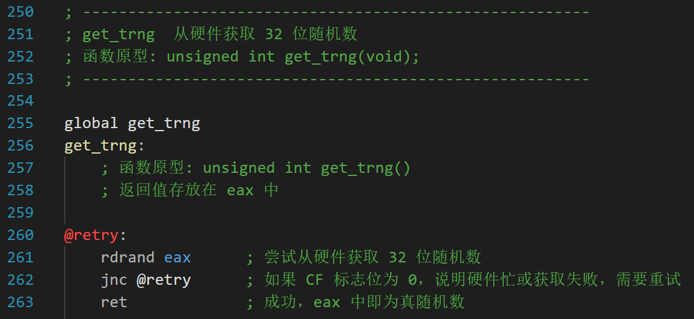
rdrand 这个指令的作用是从硬件获取 32 位随机数，并存入指定的寄存器
如果标志位 CF == 1，说明成功，否则跳转到第 260 行，继续尝试。
有读者说，你这里增加了 rdrand 指令，是不是编译器的代码也要增加对 rdrand 指令支持。
非常正确！
这里讲一下如何给我们的 csub 添加新的汇编指令支持。
一共三个步骤：
1、要修改指令模板初始化函数
找到 void add_all_inst_description(void)
在里面增加一行：
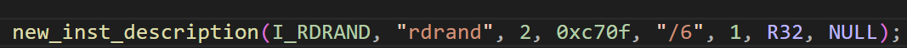
2、修改 ass_token_e、ass_token_names、ass_keywords_names；
1）ass_token_e 增加枚举成员 I_RDRAND
2）ass_token_names、ass_keywords_names 数组增加字符串 “rdrand”
3、如果有需要的话，修改对应的编码函数，或函数里面的子函数。
rdrand 只需要前 2 个步骤。
Linux 系统调用
Linux 系统调用（System Call）是用户程序向 Linux 内核请求服务的唯一合法接口。简单说，内核是操作系统的 “核心管家”，掌管着 CPU、内存、文件等所有关键资源，普通程序（用户态）不能直接触碰这些资源，只能通过 “系统调用” 这个 “窗口”，让内核帮忙完成操作。
前文说了，CRT 的高级功能，最终都会调用操作系统的系统调用。
如何调用呢？
Linux 为所有系统调用分配了唯一的编号（Syscall Number），内核通过编号识别要执行的操作，而非函数名（函数名是 CRT 封装的）。
常见系统调用编号（x86_32 架构）：
| 系统调用名 | 编号 | 功能 |
|---|---|---|
| read | 3 | 从文件 / 设备读取数据 |
| write | 4 | 向文件 / 设备写入数据 |
| open | 5 | 打开文件 / 设备 |
| close | 6 | 关闭文件 / 设备 |
| exit | 1 | 终止进程 |
| mmap | 90 | 内存映射 |
| brk | 45 | 调整进程内存堆 |
我们的 _start 函数，就在调用完 main 之后，发起了编号为 1 的系统调用，意思是终止进程。
普通函数的调用一般使用 call xxx，但是系统调用不同，
普通函数调用是 “直接跳转”，系统调用需要触发 “特权切换”。
有一点需要清楚，现在的 PC 大多是 x86-64 位架构。但是我们编译出来的是 32 位的程序，能在 64 位的 cpu 上跑吗？
当然可以。这是因为 x86-64 位 CPU 内部包含完整的 32 位指令集。当运行 32 位程序时，CPU 会进入 IA-32e 子模式（或称为 Legacy Mode），此时它只识别 32 位指令，并像传统的 32 位处理器一样工作。
有读者问，CPU 如何知道用户程序是 32 位的？
这是操作系统告诉 CPU 的。当操作系统发现 ELF 文件头中 ELFCLASS 字段（就是 “ELF” 之后的那个字节）是1，表示这是 32 位程序，操作系统会设置正确的 CS 段选择子，CPU 根据 CS 的值找到 GDT 中的段描述符，根据描述符中某些字段发现这是 32 位程序。
我们回到主题，继续说系统调用。
对于 x86 架构、Linux 系统上的 32 位程序：通过 int 0x80 指令触发系统调用，系统调用号存入 eax 寄存器，参数存入 ebx/ecx/edx 等；
这里的 int 是一条触发软件中断的汇编指令，0x80 表示中断号码，但是我们的汇编器不支持 16 进制的数字，所以我们要写 int 128
int 指令的作用是让 CPU 暂停当前程序的执行，跳去执行由操作系统或 BIOS 预先设定的中断处理程序（Interrupt Handler）。
为什么是 0x80，而不是别的数字？
x86 架构的前 32 个中断号是被 Intel 预留给 CPU 硬件异常的。比如
int 0：除以零。int 3：调试断点。int 14：页错误（Page Fault）。
所以，前 32 个肯定不行。在 IBM PC 时代，很多中断号被分配给了硬件设备：例如时钟中断、键盘、串口、磁盘驱动器等。为了保证兼容性，Linux 需要找一个“离它们远点”的、没人用的空位。与其给 read 分配一个中断号、给 write 分配一个中断号（那样会很快耗尽有限的 256 个中断名额），不如只开一扇门。Linux 创始人林纳斯·托瓦兹（Linus Torvalds）选择了 0x80 作为这扇门的编号。进入这扇门后，内核再去看 EAX 寄存器里的数字（系统调用号），决定具体去执行哪个功能。
下面可以看代码了。
getchar
1 | |
对于 3，4，6 行，相信读者不陌生，我们翻译函数入口（也有地方叫序言，prologue）和出口（也有地方叫尾声，Epilogue）的时候，反复用到。
但是第 5 行，push ebx 是为什么？为什么要把 ebx 的值入栈呢？
根据 cdecl 调用约定：
- 主调方保存（Caller-save）：
EAX,ECX,EDX。函数内部可以随便改，如果你想保留它们的值，调用前得自己压栈。 - 被调方保存（Callee-save）：
EBX,ESI,EDI,EBP。如果你的函数要用这些寄存器，必须先压栈备份，返回前弹栈恢复。
ebx 属于被调方保存，如果函数里面用到 ebx，要先备份原来的值，返回前恢复原值。
1 | |
第 6 行，在栈上分配 4 个字节，作为缓冲区
此时栈的布局如上图。
第 7 行，eax = 3，对应 read 系统调用
第 8 行，ebx 存放文件描述符，0 代表标准输入
第 9 行，ecx 存放一个地址，意思是要把若干字节读取到这个地址。
给出的地址是 ebp-8
注意，因为入栈了 ebx，所以 ebp-4 指向 ebx 的值, ebp-8 才是空位
第 10 行，edx 存放要读取的字节数，我们读 1 个字节。
第 11 行，发起系统调用。
所以功能就是从标准输入读取一个字节到 ecx 指向的地方，也就是图中的缓冲区。
代码还没有完
1 | |
系统调用返回的时候，eax 保存了系统调用的返回值。
第 1 行，如果不是 1，说明遇到错误或者遇到了文件结束，跳转到第 7 行，让 eax = -1
如果是 1，说明读取成功，从缓冲区拿出字符，零扩展到 eax
第 9 行，释放缓冲区
第 10 行，恢复 ebx
在 c 代码中调用这个函数，首先要声明
int getchar(void);
然后就可以用了。
例如下面的代码：
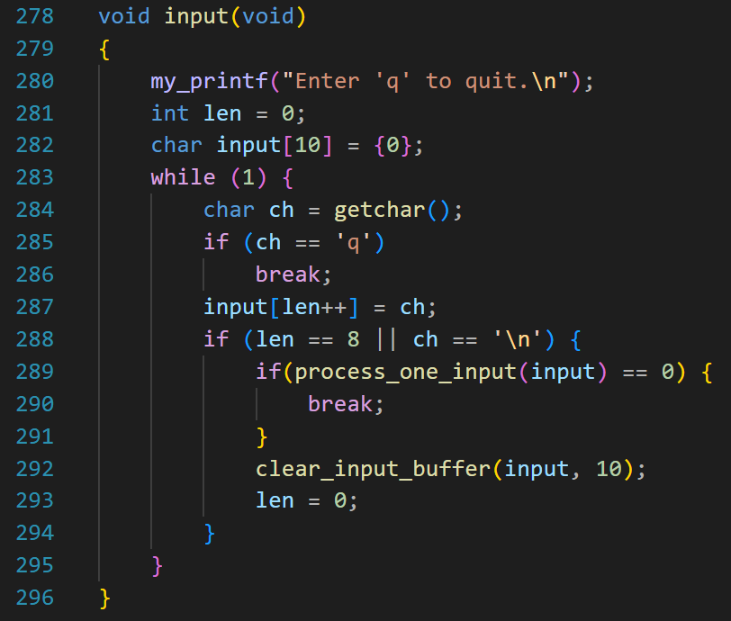
这里有 4 个关键点。
1、getchar 默认是阻塞的，当程序执行到 284 行的时候，如果你什么都没有输入，程序就会停下来；准确讲是 getchar() 会发起一个 read 系统调用，但是此时内核没有收到数据（内核维护的“终端输入缓冲区”是空的），read 就会让当前的进程进入“休眠”状态
2、当我们敲下一个按键，例如‘A’，会发生什么呢？
1）键盘控制器产生一个硬件中断。
2）内核的中断处理程序被激活，读取扫描码（Scan Code）。
3）内核将扫描码转换为 ASCII 码（0x41），并把它放进该终端对应的内核缓冲区里。
此时，内核的缓冲区里已经有数据了。
虽然内核缓冲区里有了 0x41，但因为 Linux 默认处于行缓冲（Canonical Mode）模式：
- 内核在等一个特定的字符——回车符（
\n）。 - 在你按下回车之前，尽管内核缓冲区里躺着
A、B、C，但当前的进程依然在睡觉
3、当你敲下回车后，内核认为“这一行数据完整了”。内核查看等待队列，发现你的程序正因为执行 read 系统调用而“睡觉”（阻塞），于是将你的进程状态改为“就绪”。
因为 getchar 函数只要求读 1 个字节，所以内核从它的内部缓冲区里取出第一个字符 ‘A’，拷贝到你的 ecx 指向的地址，将系统调用的返回值 eax 设为 1（表示实际只给了你 1 字节）
关键点：剩下的 ‘B’, ‘C’, ‘\n’ 依然留在内核的缓冲区里，并没有消失。
第 284 行，getchar 返回值就是 ‘A’
4、因为在 while(1) 中，所以又会执行到第 284 行，此时 read 不会阻塞！因为内核缓冲区里还躺着 b, c, \n。系统调用立即返回，getchar() 瞬间拿到 'b'。
putchar 的函数原型是 int putchar(int c);
它的代码和 my_printf 中的 raw_print 非常类似，所以不赘述。
my_printf
这个函数代码有点多，我们分段看。
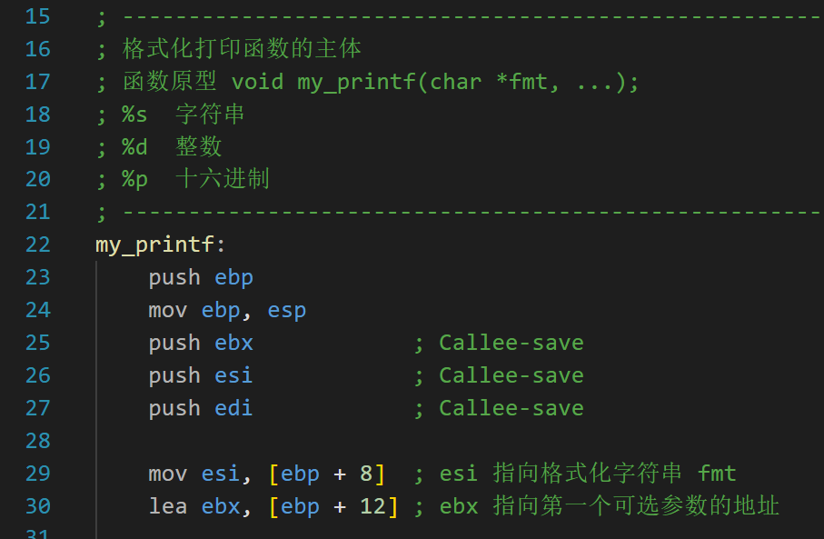
第 25~27，保存要修改的寄存器，和前面的 getchar 不同，这里是在函数序言（Function Prologue）的后面保存，我只是想说明这也是一种写法。
假设我们有代码
1 | |
因为参数从右往左入栈，所以
ebp + 8 指向 “hello! %d , %s\n” 这个字符串的地址（栈上的内容不是字符串，是它的地址）
ebp + 12 指向 num （的值）
第 29 行，让 esi 等于 “hello! %d , %s\n” 这个字符串的地址
第 30 行，让 ebx 等于 ebp + 12
1 | |
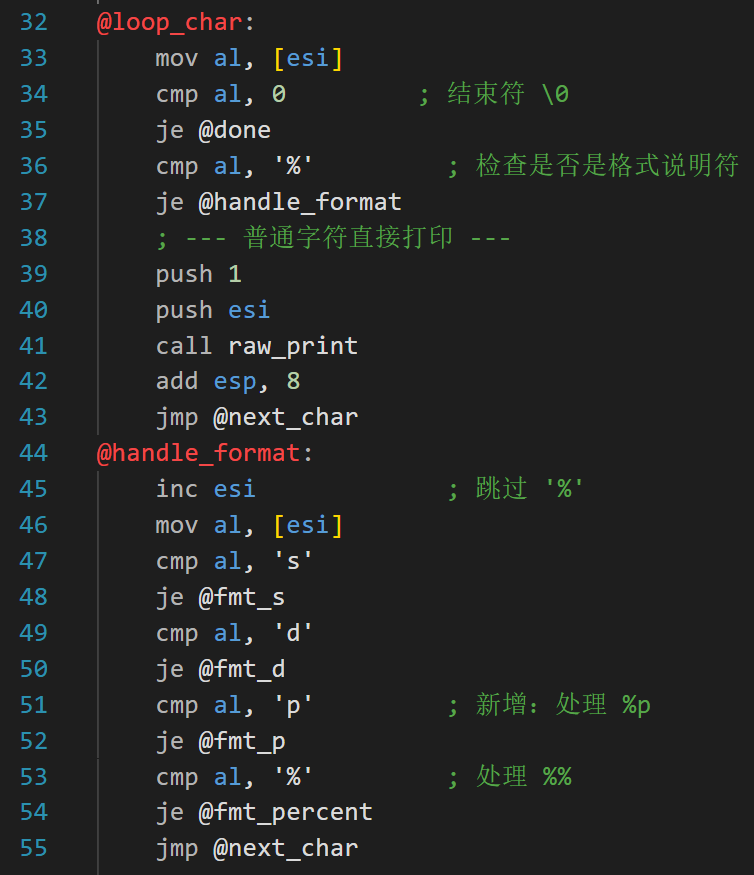
我们继续看代码。
第 33 行，取出 esi 指向的字符，和 0 比较，如果是 0，说明字符串结束了，跳转到 @done
否则，和 ‘%’ 比较，如果相等，说明是格式控制字符，跳到第 44 行，增加 esi，这样 esi 就指向 % 后面的第一个字符；第 46 行取出这个字符，第 47~54，根据不同的字符，跳转到不同的标号；
第 36 行，如果不是 %，则是普通字符，直接打印，例如 “hello! …”，原样输出
第 41 行，调用了 raw_print
这个函数的函数原型是 void raw_print(char *buf, int len);
它的代码很简单，连函数序言和结尾都不需要。
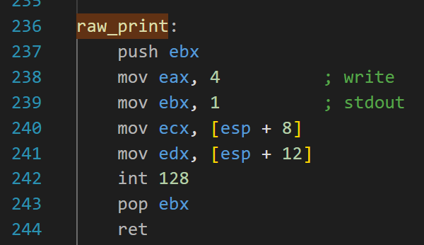
使用 4 号系统调用（sys_write）
参数 1，ebx = 1,表示标准输出，
参数 2: ecx, 来自 buf，缓冲区地址
参数 3: edx, 来自 len，要写入字节数
意思是把 buf 指向的字符串输出到标准输出，且限定 len 个字符。
再回到第 39 行，push 1，把参数 len 压栈，表示输出 1 个字符，
push esi，把参数 buf 压栈，esi 指向的是 “hello! …” 中的某个字符
所以，每次调用 raw_print，都会输出 esi 指向的那一个字符
第 43 行，跳转到 @next_char，让 esi 增加 1，处理下一个字符
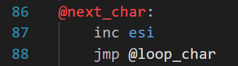
下面我们看对 10 进制整数的处理
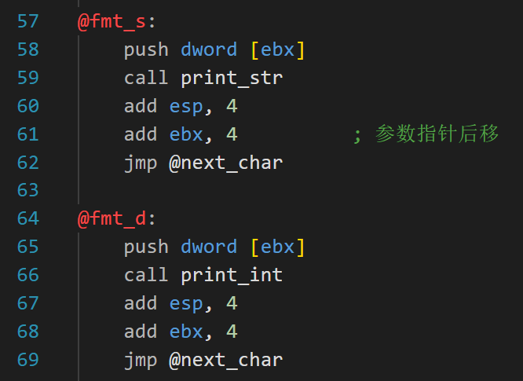
不管是 %s,还是 %d,还是 %p（代码我没有贴）,代码都是类似的，只不过第 59 行，第 66 行，调用不同的函数
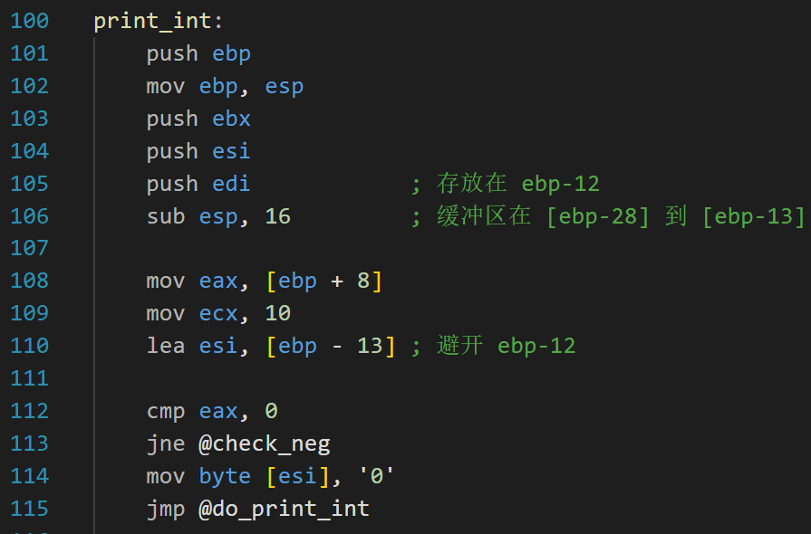
第 106 行，在栈上开辟一段 16 字节的缓冲区，这是为了存放转换后的字符串。例如把整数 123456 转换成字符串，至少占用 6 字节；
注意，因为 103 ~ 105 入栈了 3 个寄存器（的值），分别对应地址 ebp - 4, ebp - 8, ebp - 12;
然后又有 16 字节的缓冲区，所以缓冲区对应的地址（如果以字节为单位）是 ebp - 13, ebp -14, … ebp - 28,
刚好 16 字节。
第 108 行，ebp + 8 是什么？是调用 print_int 的函数在栈上最后一次 push 的那个参数
第 65 行， push dword [ebx]
前面第 30 行，让 ebx 等于 ebp + 12
所以，我们要看 ebp + 12 这个地方存的是什么，
ebp + 12 指向 num （的值）
所以，最后一次 push 的就是 num
所以第 108 行，eax = num 的值
第 109 ， ecx = 10, 这是为除法做准备，例如把 1234 转换成字符串，需要反复除以 10，再把每次的余数转换成单个的字符
第 110 行，让 esi = epb - 13，指向缓冲区的末尾（缓冲区的最高地址处）
第 112 行，比较 eax 和 0，如果等于 0，那就不用费事了，直接输出 “0”，也就是 114 行
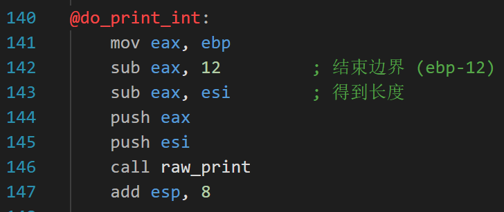
141~142，连起来，就是 eax = ebp -12
第 143 行，求字符串的长度
因为 eax 指向缓冲区的末端的下一个位置
esi 初始位置是缓冲区末端，填写了一个‘0’，然后 esi 的值没有改变
所以字符串的长度就是 1，保存在 eax 中
144，先压入 len = 1
145，压入 buf = esi ，就是缓冲区的起始地址
第 146 ，调用 raw_print，输出 “0”
第 113 行，如果不是 0，那么
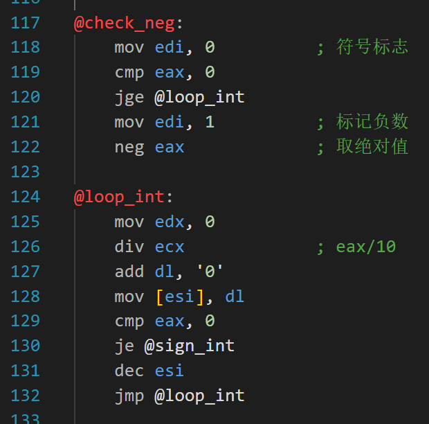
第 118 行，让 edi = 0,表示默认是整数
第 119 行，比较 eax(就是要打印的数)和 0，要是大于等于0，跳转到 124
否则，让 edi = 1,表示负数
第 122 行，对 eax 取负，那么负数就变为正数了。
第 124 行，处理 eax(肯定大于 0)
第 125 行，把 edx 清零，因为要做除法 edx:eax / ecx
- 商 存放在
EAX中。 - 余数 存放在
EDX中。
因为余数肯定小于 10，所以 dl 是装得下的，第 127 行，把余数转化成字符
第 128 行，把字符存入 esi 指向的地方
第 129，比较 eax 和 0，如果 eax 等于 0，说明商是 0，例如 3 除以 10，商 0 余 3，这就不用再做除法了。
假设不为 0，那就是 esi 自减，往缓冲区低地址移动一个字节，为了存放下一个字符
再跳到 124 行，继续做除法
如果为 0，跳转到 134
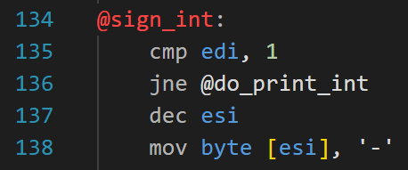
第135行，比较 edi 和 1，等于 1 说明是负数
要存一个“-”
第 137~138 是存储负号
然后该执行
这段代码已经分析了，我们再分析一下。
141~142，连起来，就是 eax = ebp -12，让 eax 指向缓冲区的末端的下一个位置
前面存储字符的时候，esi 初始位置是缓冲区末端，先填写字符，
然后判断还有没有字符要写，如果有，往低地址移动一个字节。
当除法停止的时候，判断要不要加负号，不管加不加负号，
esi 指向的位置就是要打印输出的第一个字符。
从第一个字符到缓冲区末端，都是我们要打印的字符。因为字符是倒着填的。
所以 eax - esi 的值就是字符串的长度。
对于 print_str 和 print_hex，代码都不如这个难，我就不分析了，留给读者练习。
还有一点要注意，这个可变参数的“可变”体现在什么地方
首先，可变也是有迹可循的
第一个参数是格式控制字符串，这里面出现 %d，%p，%s 的地方，就是需要用参数填充的地方，所以有多少个控制字符，就有多少个参数。
代码中也是这样处理的，就是从左到右检查控制字符，根据控制字符的个数移动 ebx;
第 30 行，让 ebx 等于 ebp + 12
它就指向了第一个可选参数，当然，如果代码是 my_printf(“hello”);
就没有可选参数，所以说 ebx 是时刻准备着，当发现控制字符的时候，它已经指向参数了。
当把参数处理完后，也就是第 59 行执行完，第 61 行，ebx 会加 4，指向下一个可选参数。
总结一下就是，ebx 先指向第一个可选参数，只要遇到控制字符，我就打印这个参数，然后指向下一个可选参数。
本文到这里就结束了。
虽然我们实现的 CRT 非常简单，不，应该是简陋，但是至少可以和用户交互了。
下节课，也是最后一篇文章，我们用 csub 支持的语法写一个小游戏，作为最后的成果展示。